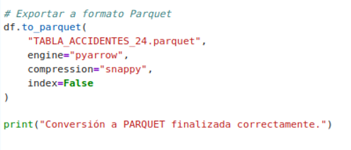

Ejercicio resuelto 2: Conversión de un fichero CSV a formato Parquet
En este ejercicio se propone convertir el conjunto de datos TABLA_ACCIDENTES_24.csv al formato Apache Parquet, uno de los formatos de almacenamiento columnar más utilizados en entornos Big Data.
Para realizar esta transformación se emplea la biblioteca Pandas para cargar el fichero CSV y la biblioteca PyArrow para generar el fichero Parquet aplicando compresión Snappy.
A diferencia del formato Apache Avro, que utiliza una representación orientada a registros, Parquet organiza la información por columnas. Esta característica resulta especialmente adecuada para cargas de trabajo analíticas, ya que permite acceder únicamente a las columnas necesarias durante una consulta y reducir el volumen de información transferida.
Objetivo del ejercicio
El objetivo es que el estudiante comprenda el proceso de transformación de un fichero CSV a un formato columnar optimizado para entornos Big Data y pueda comprobar las ventajas que ofrece Parquet para el almacenamiento y posterior análisis de grandes volúmenes de datos.
- Cargar el fichero TABLA_ACCIDENTES_24.csv.
- Preparar los datos mediante Pandas.
- Gestionar los valores nulos del conjunto de datos.
- Convertir la información al formato Parquet.
- Aplicar compresión Snappy.
- Comprobar el fichero Parquet generado.
- Comparar las características del CSV y Parquet.
1. Carga del fichero CSV
El primer paso consiste en cargar el conjunto de datos
TABLA_ACCIDENTES_24.csv utilizando la biblioteca
Pandas. Para ello, se emplea la función
read_csv(), especificando el separador utilizado por
el fichero y la codificación correspondiente.
"TABLA_ACCIDENTES_24.csv",
sep=";",
encoding="latin1",
low_memory=False
)
# Sustituir valores nulos
df = df.where(pd.notnull(df), None)
En el código mostrado se utiliza pd.read_csv() para
cargar el fichero CSV en un DataFrame. El parámetro
sep=";" indica que los campos están separados mediante
punto y coma, mientras que encoding="latin1" permite
interpretar correctamente los caracteres presentes en el conjunto
de datos.
Posteriormente, mediante pd.notnull(), se identifican
los valores que no son nulos y se sustituyen los valores ausentes
por None, preparando los datos para su posterior
conversión al formato Parquet.
2. Preparación de los datos
Una vez cargado el fichero CSV, los datos se encuentran almacenados en un DataFrame de Pandas. Esta estructura permite realizar las operaciones necesarias para preparar la información antes de realizar la conversión.
La preparación de los datos resulta especialmente importante cuando se trabaja con formatos estructurados como Parquet, ya que cada columna debe mantener un tipo de dato coherente durante el proceso de serialización.

Figura 41.
Carga y preparación del fichero
TABLA_ACCIDENTES_24.csv mediante Pandas.
Fuente: elaboración propia.
3. Conversión al formato Apache Parquet
Una vez preparados los datos, se procede a generar el fichero Apache Parquet. Para ello se utiliza la biblioteca PyArrow, que permite convertir el DataFrame de Pandas a una estructura compatible con Parquet.
Durante este proceso se aplica compresión Snappy, con el objetivo de reducir el espacio ocupado por el fichero manteniendo un buen rendimiento durante las operaciones de lectura y escritura.
"TABLA_ACCIDENTES_24.parquet",
engine="pyarrow",
compression="snappy"
)
4. Generación del fichero Parquet
Como resultado de la ejecución se obtiene el fichero:
Este fichero contiene la información del conjunto de datos original en un formato binario y columnar, preparado para su utilización en procesos de análisis dentro de una arquitectura Big Data.
CSV frente a Parquet
La conversión permite observar las diferencias existentes entre ambos formatos de almacenamiento.
- CSV: formato de texto plano, sencillo de intercambiar y visualizar, pero menos eficiente para grandes volúmenes de datos.
- Parquet: formato binario y columnar, optimizado para consultas analíticas y almacenamiento distribuido.
- Compresión Snappy: permite reducir el espacio ocupado y mejorar la eficiencia de las operaciones de almacenamiento y lectura.
Resultado del ejercicio
Al finalizar el ejercicio, el estudiante habrá transformado el conjunto de datos TABLA_ACCIDENTES_24.csv en un fichero TABLA_ACCIDENTES_24.parquet, utilizando PyArrow y compresión Snappy.
Este proceso permite comprobar de forma práctica cómo los formatos de almacenamiento optimizados pueden mejorar la eficiencia en arquitecturas Big Data y facilita la posterior utilización de los datos mediante herramientas del ecosistema Hadoop.